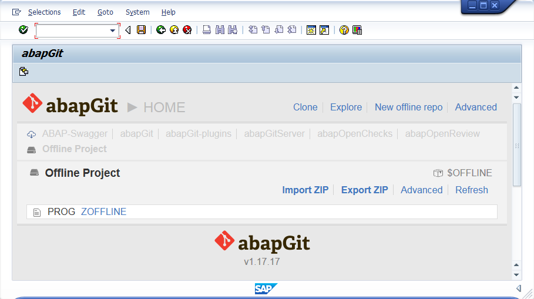

SAP TechEd Barcelona 2016
Community Session
DEV223
| @LarsHvam | |
| larshp |

|
One of Denmark’s leading consultancies in IT development, implementation and operations. Offices in Denmark, China, the Czech Republic, the Philippines, Switzerland, and the US. |
Disclaimer

- Open source
- Old versions available
- Contribute
| Git client for ABAP | |
| started 2½ years ago | |
| 770+ commits | |
| 9 contributors | |
| ~33000 lines | |
| 7.02 and up | |
Contributors
| Alexander Tsybulsky | |||
| Oliver Jägle | |||
| Andrei Vishnevsky | |||
 |
Svitlana Shlapak | ||
| Graham Robinson | |||
| Gregor Wolf | |||
| Fabio Zuber | |||
| Nuno Godinho |
Git?
"Git is a free and open source distributed version control system designed to handle everything from small to very large projects with speed and efficiency."
Source: https://git-scm.com |

Design Goals
- Easy installation
- Easy upgrade
- Small system footprint
- Code readable in git repository
Connectivity
cl_http_client=>create_by_url(
EXPORTING
url = 'https://github.com'
ssl_id = 'ANONYM'
IMPORTING
client = li_client ).
li_client->request->set_cdata( '' ).
li_client->request->set_header_field(
name = '~request_method'
value = 'GET' ).
li_client->request->set_header_field(
name = 'user-agent'
value = 'git/abapGitv1.9.7' ).
li_client->request->set_header_field(
name = '~request_uri'
value = '/larshp/abapOpenChecks.git/info/refs?service=git-upload-pack' ).
li_client->send( ).
001e# service=git-upload-pack 000000fb868c5c06d2b51f6b83668f80922260f42a7ff4ca HEAD multi_ack thin-pack ... 003f868c5c06d2b51f6b83668f80922260f42a7ff4ca refs/heads/master 0040c1398119983b0ae48ec4091d9519194768a71bae refs/pull/268/head 0000
Serialization

REPORT zhello.
WRITE 'hello'.
<?xml version="1.0" encoding="utf-8"?>
<abapGit version="v1.0.0" serializer="LCL_OBJECT_PROG" serializer_version="v1.0.0">
<asx:abap xmlns:asx="http://www.sap.com/abapxml" version="1.0">
<asx:values>
<PROGDIR>
<NAME>ZHELLO</NAME>
<STATE>A</STATE>
<SQLX/>
<EDTX/>
<VARCL>X</VARCL>
<DBAPL/>
<DBNA/>
<CLAS/>
<TYPE/>
<OCCURS/>
<SUBC>1</SUBC>
<APPL/>
<SECU/>
<CNAM/>
<CDAT>0000-00-00</CDAT>
<UNAM/>
<UDAT>0000-00-00</UDAT>
<VERN/>
<LEVL/>
<RSTAT/>
<RMAND/>
<RLOAD>E</RLOAD>
<FIXPT>X</FIXPT>
<SSET/>
<SDATE>0000-00-00</SDATE>
<STIME/>
<IDATE>0000-00-00</IDATE>
<ITIME/>
<LDBNAME/>
<UCCHECK>X</UCCHECK>
</PROGDIR>
<DYNPROS/>
<CUA>
<ADM>
<ACTCODE/>
<MENCODE/>
<PFKCODE/>
<DEFAULTACT/>
<DEFAULTPFK/>
<MOD_LANGU/>
</ADM>
<STA/>
<FUN/>
<MEN/>
<MTX/>
<ACT/>
<BUT/>
<PFK/>
<SET/>
<DOC/>
<TIT/>
<BIV/>
</CUA>
<TPOOL>
<item>
<ID>R</ID>
<KEY/>
<ENTRY>test</ENTRY>
<LENGTH>4</LENGTH>
<SPLIT/>
</item>
</TPOOL>
</asx:values>
</asx:abap>
</abapGit>
deserialization
All files can be imported back into the ABAP systemSupported object types
| ACID | AUTH | CLAS | DOCT | DOCV |
| DOMA | DTEL | ENHC | ENHO | ENHS |
| ENQU | FUGR | IARP | IASP | IATU |
| MSAG | NROB | PARA | PINF | PROG |
| SFBF | SFBS | SFSW | SHI3 | SHLP |
| SICF | SPLO | SSFO | SSST | SMIM |
| SUSC | SUSO | TABL | TOBJ | TRAN |
| TTYP | TYPE | VCLS | VIEW | W3HT |
| W3MI | WDYA | WDYN | WEBI | XSLT |
|
Updated list: Supported-object-types and https://github.com/larshp/abapGit-Plugins by Oliver Jägle @OJaegle |
Protocol

Git-Internals-Git-Objects, pack-format.txt, rfc1951.txt
Github Support
|
The HTTP header incident rfc2616-sec4.html#sec4.2 "Field names are case-insensitive" |
|
|
The SHA1 mismatch Git protocol: "Server and client MUST use lowercase for obj-id, both MUST treat obj-id as case-insensitive." | |
Features: Works With
|
| |
|
|

|
|
|

|
Features: .abapgit.xml
<?xml version="1.0" encoding="utf-8"?>
<asx:abap xmlns:asx="http://www.sap.com/abapxml" version="1.0">
<asx:values>
<DATA>
<MASTER_LANGUAGE>E</MASTER_LANGUAGE>
<STARTING_FOLDER>/abap/</STARTING_FOLDER>
<IGNORE>
<item>/.gitignore</item>
<item>/.travis.yml</item>
<item>/LICENSE</item>
<item>/README.md</item>
</IGNORE>
</DATA>
</asx:values>
</asx:abap>
Features: Diff
Features: Offline projects
Features: Folder support
Features: Branches
Features: Explore

Features: Background mode
Use case: Share code
What if: The Ethan Setup
Ethan's Article, @esjewett
What if: Extra visibility
abapGitServer Guide
abapmerge
- ~33000 lines
- ~140 classes
- Single REPORT/file
REPORT zabapgit.
INCLUDE zabapgit_protocol.
INCLUDE zabapgit_gui.
INCLUDE zabapgit_prog.
|
abapmerge |
Labs Preview: Downport
DATA: lt_foo TYPE STANDARD TABLE OF usr02 WITH EMPTY KEY.
lt_foo = VALUE #( ( bname = 'TEST' ) ).
LOOP AT lt_foo ASSIGNING FIELD-SYMBOL(<ls_bar>).
WRITE: / <ls_bar>-bname.
ENDLOOP.
DATA: lt_foo TYPE STANDARD TABLE OF usr02 WITH DEFAULT KEY.
FIELD-SYMBOLS: <ls_bar> LIKE LINE OF lt_foo.
APPEND INITIAL LINE TO lt_foo ASSIGNING <ls_bar>.
<ls_bar>-bname = 'TEST'.
LOOP AT lt_foo ASSIGNING <ls_bar>.
WRITE: / <ls_bar>-bname.
ENDLOOP.
Labs Preview: Crazy
|
Git, distributed part #357
Signing commits #358 UI assets #374 |
DEMO
Contribute
https://github.com/larshp/abapGitSlides
https://larshp.github.io/teched-2016-emeaPlease complete a session evaluation for this session
@LarsHvam